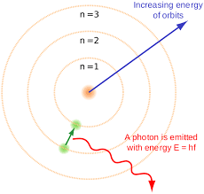
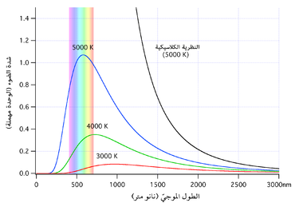

|  |
theory in the early twentieth century, like the theory of relativity, was used to solve problems that classical physics could not explain, and some of these problems can be summarized in the following:
-
The classical theory also considers that the colors of the atomic spectrum should cover all wavelengths with the same intensity, but physicists note that experimental results strongly contradict this as different atoms emit spectra (light waves) that have very specific and specific wavelengths.
-
Another problem arises when we contemplate the problem of the black body "which is a body that absorbs all the radiation falling on it to re-emit it completely again", as all attempts based on traditional statistical physics failed to explain the black body radiation curve, especially at high frequencies, and this was later known as the ultraviolet catastrophe. It appeared to scientists that the laws of thermodynamics became incapable of explaining this phenomenon.
|
 |